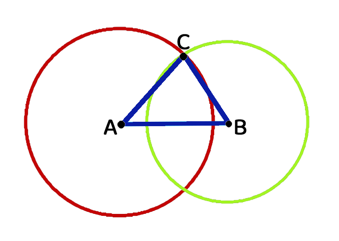

⭕
İki çemberin kesişiminden üçgeneİki çember birbirini kestiğinde iki kesişim noktası oluşur. Çemberlerin merkezlerini ve kesişim noktalarından birini birleştirdiğimizde bir üçgen elde ederiz.

Neden üçgen oluşur? A merkezli çemberin yarıçapı [AC] uzunluğunu, B merkezli çemberin yarıçapı [BC] uzunluğunu belirler. [AB] ise iki merkez arasındaki sabit uzaklıktır. Üç kenarı da belirli olan bu üç doğru parçası bir üçgen oluşturur.
🛠️
İnşa Et — çemberlerin yarıçaplarını değiştir, üçgenin türünü keşfetA ve B merkezli iki çemberin yarıçaplarını kaydırma çubuklarıyla değiştir. Çemberler kesiştiği sürece, kesişim noktası (C) ile birlikte bir üçgen oluşur; oluşan üçgenin türü altta otomatik olarak güncellenir.
Eşkenar üçgen
AB=200, AC=200, BC=200
| Yarıçap durumu | Oluşan üçgen |
|---|---|
| [AC] = [BC] = [AB] | Eşkenar üçgen |
| [AC] = [BC] ≠ [AB] [AC] = [AB] ≠ [BC] [BC] = [AB] ≠ [AC] | İkizkenar üçgen |
| [AC] ≠ [BC] ≠ [AB] (hepsi farklı) | Çeşitkenar üçgen |
| [AC] + [BC] ≤ [AB] |[AC] - [BC]| ≥ [AB] | Üçgen oluşmaz (çemberler kesişmez) |
Genelleme: Üç kenar ile bir üçgen oluşturulabilmesi için, herhangi iki kenarın toplamı üçüncü kenardan büyük olmalıdır. Bu, "üçgen eşitsizliği" olarak bilinir ve kesişen çemberlerin varlığıyla doğrudan ilişkilidir.
📜
Öklid'in izindeKesişen çemberlerden üçgen inşa etme fikri, antik Yunan matematikçisi Öklid'in (Euclid) yaklaşık 2300 yıl önce yazdığı "Elemanlar" (Stoicheia) adlı eserinin ilk önermelerinden birine dayanır. Öklid, yalnızca pergel ve cetvel kullanarak eşkenar bir üçgenin nasıl inşa edilebileceğini göstermiştir.
Bu, matematik tarihinin en eski ve en etkili inşa yöntemlerinden biridir; günümüzde matematik yazılımlarındaki "çember" ve "kesişim noktası" araçları da aynı fikri dijital ortama taşır.
✏️
Çoktan seçmeliİki çemberin merkezleri arasındaki uzaklık 8 cm; yarıçapları 5 cm ve 5 cm ise oluşan üçgen türü nedir?
✍️
Kısa cevaplıKenar uzunlukları 3 cm, 4 cm, 9 cm olan doğru parçalarıyla üçgen oluşturulabilir mi? (Evet/Hayır)
✅
Doğru mu, yanlış mı?Bir üçgenin kenar uzunluklarından herhangi ikisinin toplamı, üçüncü kenardan büyük olmalıdır.
İki çemberin yarıçapları toplamı, merkezler arası uzaklıktan küçükse çemberler kesişir.
🔗
Eşleştirmer₁ = r₂ = [AB]
r₁ = r₂ ≠ [AB]
r₁ ≠ r₂, ikisi de [AB]'den farklı
🧠
Hızlı özetKesişen çemberler
Merkezler ve bir kesişim noktası üçgen oluşturur.
Üçgen eşitsizliği
İki kenarın toplamı üçüncü kenardan büyük olmalıdır.
Yarıçap = kenar
Her çemberin yarıçapı, üçgenin bir kenar uzunluğuna karşılık gelir.
Öklid
Bu yöntem, "Elemanlar" adlı eserdeki ilk inşa önermelerinden biridir.
🎯
Kendini DeneSoru 1/10 · Puan 0